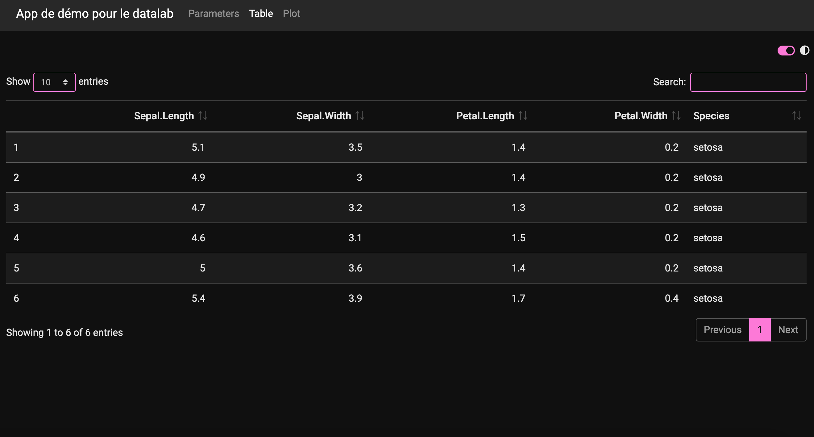
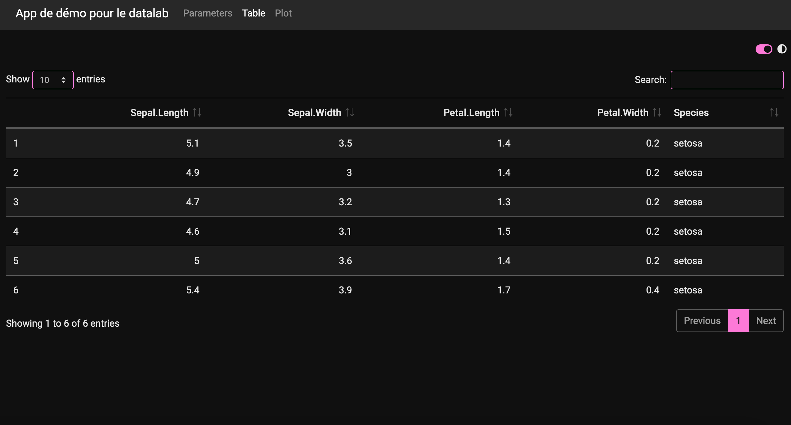

Intégration de la charte graphique dans les apps Shiny
Cervan Girard & Margot Brard
2021-07-06
bc-charte-shiny.Rmd
library(bdxmetroidentity)Le package inclut différentes fonctions dédiées à l’intégration de la charte graphique dans les apps Shiny :
-
theme_bdxmetro_shiny(): crée le thème bootstrap light (thème par défaut), -
theme_bdxmetro_dark_shiny(): crée le thème bootstrap dark, -
switch_button_theme(): insère le bouton de switch light/dark dans les UI des apps, -
init_cookie_theme(): initie un cookie pour tracker le dernier thème sélectionné, -
change_theme(): capture le changement de thème, -
fluidpage_bdx(): crée une fluidPage, -
navbarpage_bdx(): crée une navbarPage.
Partie UI
En fonction du design de l’app recherché, la fonction fluidpage_bdx() ou la fonction navbarpage_bdx() doit être utilisée. Ces deux fonctions miment les fonctionnalités de shiny::fluidPage() et de shiny::navbarPage(), mais incluent un thème light/dark et un bouton de switch, en haut à droite.
ui <- fluidpage_bdx(...)
ui <- navbarpage_bdx(...)Partie serveur
Les changements de thèmes sont ensuite récupérés de manière réactive dans la partie serveur. Cela passe par la création d’une reactive value (ici appelée rv) qui capture le thème. La fonction init_cookie_theme() est également appelée dans la fonction serveur au sein d’un observeEvent.
rv <- reactiveValues()
rv$theme <- "light"
observeEvent(session,{
init_cookie_theme(input$dark_mode)
}, once = TRUE)
observeEvent(input$dark_mode,{
change_theme(input$dark_mode)
# theme to be used for the graphs
if (isTRUE(input$dark_mode)) {
rv$theme <- "dark"
} else {
rv$theme <- "light"
}
}, ignoreInit = TRUE)La reactive value qui capture le thème est utilisée pour mettre à jour les thèmes des graphiques ggplot2 à chaque action sur le bouton de switch light/dark :
my_ggplot2_plot <- ggplot(data = iris) +
aes(x = Sepal.Width, fill = Species) +
geom_density() +
scale_fill_bdxmetro_discrete()
output$my_plot <- renderPlot({
my_ggplot2_plot +
theme_bdxmetro(theme = rv$theme)
})Elle peut également être utilisée pour mettre à jour le thème du logo :
output$my_logo <- renderUI({
if (rv$theme == "light") {
tags$img(src = "datalab-logo-lightmode.png", width = "150px")
} else if (rv$theme == "dark") {
tags$img(src = "datalab-logo-darkmode.png", width = "150px")
}
})Apps de démo
App de démo construite autour d’un fluidPage :
shiny::runApp(system.file("shiny", "shiny_template_fluidpage.R", package = "bdxmetroidentity"))


App de démo construite autour d’un navbarPage :
shiny::runApp(system.file("shiny", "shiny_template_navbarpage.R", package = "bdxmetroidentity"))


 
